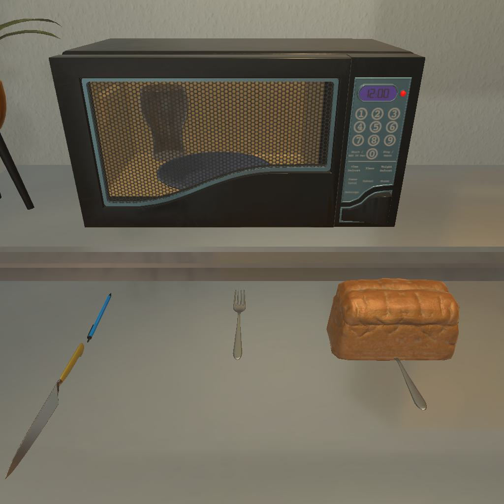
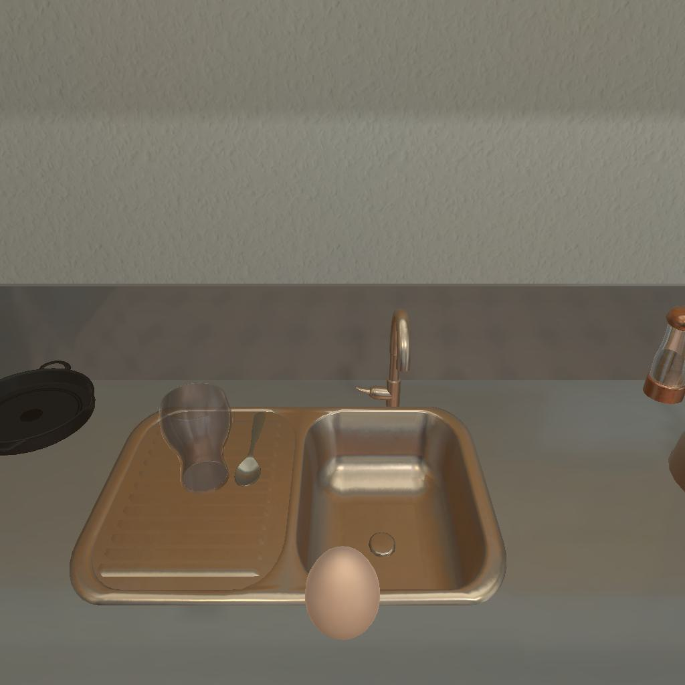

---------------------------------------------------------task: 22---------------------------------------------------------
--------------------------------------------------------------------------------------------------------------------------------------------------------------------
--------------------------------------------------------------------------------------------------------------------------------------------------------------------
Step:--------------------------------------------------------------------------15-------------------------------------------------------------------------------
----------------------------------------
VLM Prompt:
Image1:
Image2:
Image3:
**Instruction**
1. Analyze the provided images to identify all visible household objects and compare the difference between images (e.h. whether the object is opened or not and taken on hand or not), focusing on those relevant to the task description "put a hot egg in countertop."
2. Use the analysis of images and the task hint "The agent must find an object of the desired type, pick it up, go to a microwave, heat the object with the microwave, then find the correct location to place it, and put it down there. The agent does not need to use the microwave button or open the microwave to heat the object, and the agent just needs to do action that is "heat the object with the microwave"." to answer the question: what is the most reasonable action in the choices for the task description "put a hot egg in countertop"?
3. Decide and write the answer using the template: The answer is: (i): , where i is the real number. If there is no desired object in images, search every place based on **Initial Observation** to find the object. And if no one is exactly correct, choose a similar answer.
**Initial Observation**
You are in the middle of a room. Looking quickly around you, you can see cabinet (1-18), countertop (1-4), sink (1), drawer (1-7), sinkbasin (1), coffeemachine (1), microwave (1), garbagecan (1), stoveburner (1-4), toaster (1), fridge (1)
**Answer Choices**
(1): go to cabinet 1
(2): go to cabinet 2
(3): go to countertop 1
(4): go to cabinet 3
(5): go to cabinet 4
(6): go to cabinet 5
(7): go to cabinet 6
(8): go to drawer 1
(9): go to drawer 2
(10): go to sinkbasin 1
(11): go to cabinet 7
(12): go to cabinet 8
(13): go to coffeemachine 1
(14): go to microwave 1
(15): go to cabinet 9
(16): go to countertop 2
(17): go to cabinet 10
(18): go to drawer 3
(19): go to drawer 4
(20): go to garbagecan 1
(21): go to drawer 5
(22): go to cabinet 11
(23): go to cabinet 12
(24): go to cabinet 13
(25): go to cabinet 14
(26): go to stoveburner 1
(27): go to countertop 3
(28): go to stoveburner 2
(29): go to stoveburner 3
(30): go to stoveburner 4
(31): go to drawer 6
(32): go to cabinet 15
(33): go to cabinet 16
(34): go to cabinet 17
(35): go to cabinet 18
(36): go to toaster 1
(37): go to drawer 7
(38): go to countertop 4
(39): go to fridge 1
(40): put egg 1 in/on sink 1
(41): clean egg 1 with sink 1
(42): clean egg 1 with sinkbasin 1
(43): examine egg 1
(44): examine sink 1
**Answer**
Let's think step by step by following the instructions.
----------------------------------------
----------------------------------------
Original Response:
First, we need to analyze the provided images to identify all visible household objects:
Image1:
- Microwave (visible and not in use)
- Bread (on the countertop)
- Knife and fork (on the countertop)
Image2 & Image3:
- Sink with a drying rack (Image2 shows a glass and a spoon on the rack, Image3 does not)
- Egg (Image2 shows the egg in the sink, Image3 shows the egg on the countertop)
Based on the task description "put a hot egg in countertop," and the task hint that states the agent must find an object (egg), heat it in the microwave, and then place it on the countertop, we can deduce the following:
- The egg is already visible in Image2 and Image3, so there's no need to search cabinets or drawers for it.
- The egg in Image3 is on the countertop but not yet hot, indicating that it has not been heated in the microwave.
Given these observations and the instructions that the agent does not need to use the microwave button or open the microwave to heat the object, the most reasonable action from the choices provided would be to heat the egg with the microwave and then put it down on the countertop.
However, the provided answer choices do not include an option to directly "heat the egg with the microwave." Therefore, we must choose the action that involves going to the microwave to imply the heating action.
The answer is: (14): go to microwave 1
----------------------------------------
----------------------------------------
>>> Refine Original VLM Response and Get Pure Action: go to microwave 1
----------------------------------------
-----------------------------------------------------------------
Running time: 15.716995000839233 seconds
Total Money: 14.076729999999996
-----------------------------------------------------------------
-----------------------------------------------------------------
Text Observation:You arrive at loc 14. The microwave 1 is closed.
-----------------------------------------------------------------
UNSUCCEED